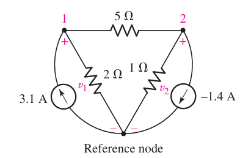
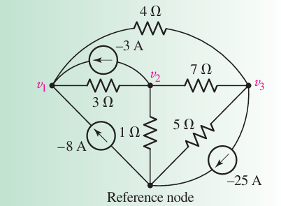
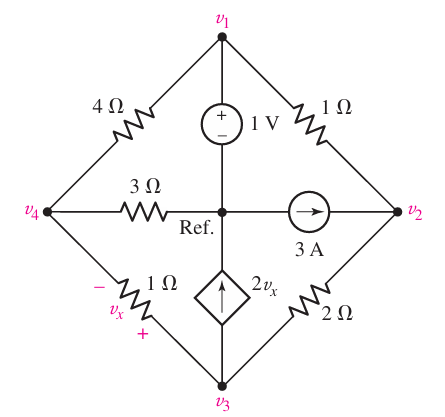
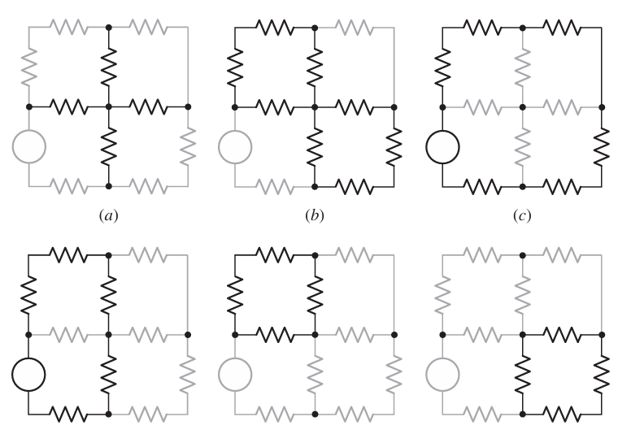
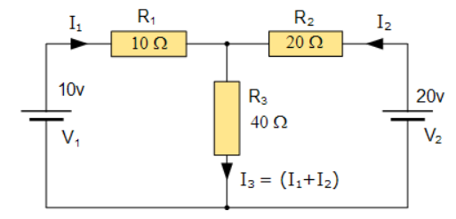
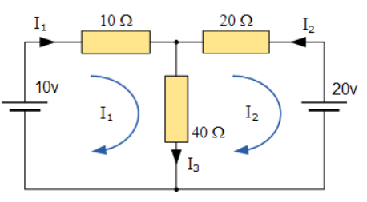

Basic Nodal and Mesh Analysis#
Nodal Analysis#
Nodal analysis is a powerful circuit analysis method based on Kirchhoff’s Current Law (KCL). Initially, we examined simple circuits with two nodes, obtaining a single voltage equation. As the number of nodes increases, each additional node introduces an unknown voltage and a corresponding KCL equation. For example, a three-node circuit has two unknown voltages and two equations, while an N-node circuit requires (N-1) voltages and (N-1) equations. The process involves designating a reference node, typically the one connected to the most branches or a ground node. The voltage at each node is then calculated relative to this reference node.

import schemdraw
import schemdraw.elements as elm
---------------------------------------------------------------------------
ModuleNotFoundError Traceback (most recent call last)
Cell In[1], line 1
----> 1 import schemdraw
2 import schemdraw.elements as elm
ModuleNotFoundError: No module named 'schemdraw'
Example 1: Nodal#

At node 1:
At node 2:
At node 3:
Example 2: Nodal#

Soloution#
\( v_1 = 1 \)
\(\frac{v_4 - v_1}{4} + \frac{v_4 - v_3}{1} + \frac{v_4}{3} = 0 \)
\(\frac{v_3 - v_4}{1} + 2v_x + \frac{v_3 - v_2}{2} = 0 \)
\(\frac{v_2 - v_1}{1} + \frac{v_2 - v_3}{2} - 3 = 0 \)
\( v_x = v_3 - v_4 \)
To substitute \( v_x = v_3 - v_4 \) into equation 3, we get:
Given: $\( \frac{v_3 - v_4}{1} + 2v_x + \frac{v_3 - v_2}{2} = 0 \)$
Substitute \( v_x = v_3 - v_4 \):
Simplify the equation: $\( (v_3 - v_4) + 2(v_3 - v_4) + \frac{v_3 - v_2}{2} = 0 \)$
Now, the new system of equations is:
\( v_1 = 1 \)
\(\frac{v_4 - v_1}{4} + \frac{v_4 - v_3}{1} + \frac{v_4}{3} = 0 \)
\( 3v_3 - 3v_4 + \frac{v_3 - v_2}{2} = 0 \)
\(\frac{v_2 - v_1}{1} + \frac{v_2 - v_3}{2} - 3 = 0 \)
To present the given equations as a system of linear equations, we rewrite each equation in a standard form:
\( v_1 = 1 \)
\(\frac{v_4 - v_1}{4} + \frac{v_4 - v_3}{1} + \frac{v_4}{3} = 0 \) $\( \frac{v_4}{4} - \frac{v_1}{4} + v_4 - v_3 + \frac{v_4}{3} = 0 \)$
Combine like terms:
\[ \left(\frac{1}{4} + 1 + \frac{1}{3}\right)v_4 - \frac{1}{4}v_1 - v_3 = 0 \]\[ \left(\frac{3}{12} + \frac{12}{12} + \frac{4}{12}\right)v_4 - \frac{1}{4}v_1 - v_3 = 0 \]\[ \frac{19}{12}v_4 - \frac{1}{4}v_1 - v_3 = 0 \]Multiply through by 12 to clear the fractions:
\[ 19v_4 - 3v_1 - 12v_3 = 0 \]\( 3v_3 - 3v_4 + \frac{v_3 - v_2}{2} = 0 \)
\[ 3v_3 - 3v_4 + \frac{v_3}{2} - \frac{v_2}{2} = 0 \]Combine like terms:
\[ 3v_3 - 3v_4 + \frac{1}{2}v_3 - \frac{1}{2}v_2 = 0 \]\[ \left(3 + \frac{1}{2}\right)v_3 - 3v_4 - \frac{1}{2}v_2 = 0 \]\[ \frac{7}{2}v_3 - 3v_4 - \frac{1}{2}v_2 = 0 \]Multiply through by 2 to clear the fractions:
\[ 7v_3 - 6v_4 - v_2 = 0 \]\(\frac{v_2 - v_1}{1} + \frac{v_2 - v_3}{2} - 3 = 0 \)
\[ v_2 - v_1 + \frac{v_2}{2} - \frac{v_3}{2} - 3 = 0 \]Combine like terms:
\[ v_2 - v_1 + \frac{1}{2}v_2 - \frac{1}{2}v_3 - 3 = 0 \]\[ \left(1 + \frac{1}{2}\right)v_2 - v_1 - \frac{1}{2}v_3 - 3 = 0 \]\[ \frac{3}{2}v_2 - v_1 - \frac{1}{2}v_3 - 3 = 0 \]Multiply through by 2 to clear the fractions:
\[ 3v_2 - 2v_1 - v_3 - 6 = 0 \]
To convert the system of linear equations into matrix form \( \mathbf{A} \mathbf{v} = \mathbf{b} \), we organize the coefficients of the variables \( v_1, v_2, v_3, \) and \( v_4 \) into a matrix \(\mathbf{A}\), and the constants into a vector \(\mathbf{b}\).
The system of equations is:
\( v_1 = 1 \)
\( 19v_4 - 3v_1 - 12v_3 = 0 \)
\( 7v_3 - 6v_4 - v_2 = 0 \)
\( 3v_2 - 2v_1 - v_3 - 6 = 0 \)
First, let’s rewrite them in standard form:
\( 1v_1 + 0v_2 + 0v_3 + 0v_4 = 1 \)
\( -3v_1 + 0v_2 - 12v_3 + 19v_4 = 0 \)
\( 0v_1 - 1v_2 + 7v_3 - 6v_4 = 0 \)
\( -2v_1 + 3v_2 - 1v_3 + 0v_4 = 6 \)
Now, the coefficient matrix \(\mathbf{A}\), the variable vector \(\mathbf{v}\), and the constant vector \(\mathbf{b}\) are:
Thus, the system of linear equations in matrix form is:
import numpy as np
# Define the matrix A and the vector b
A = np.array([[1, 0, 0, 0],
[-3, 0, -12, 19],
[0, -1, 7, -6],
[-2, 3, -1, 0]])
b = np.array([1, 0, 0, 6])
# Solve the system of linear equations
v = np.linalg.solve(A, b)
v
array([1. , 3.08536585, 1.25609756, 0.95121951])
The solution to the system of linear equations is:
So the values of the variables are:
\( v_1 = 1 \)
\( v_2 = 3.085 \) (approximately)
\( v_3 = 1.256 \) (approximately)
\( v_4 = 0.951 \) (approximately)
Homework: Nodal Analysis#
For the example above, or a more complex circuit:
Draw the circuit using Schemdraw.
Perform nodal analysis using PySpice.
add short discusion
Mesh#
Mesh as a loop that does not contain any other loops within it. start with following example:
(a,b) The set of branches identified by the heavy lines is neither a path nor a loop.
(c) This path is a loop but not a mesh, since it encloses other loops.
(d) This path is also a loop but not a mesh.
(e, f) Each of these paths is both a loop and a mesh.

Why Mesh is good#
One straightforward method to reduce the amount of mathematics involved in circuit analysis is to use Kirchhoff’s Current Law (KCL) to determine the currents, \( I_1 \) and \( I_2 \), flowing through two resistors. This approach eliminates the need to calculate the current \( I_3 \) separately, as \( I_3 \) is simply the sum of \( I_1 \) and \( I_2 \).

Using Kirchhoff’s Voltage Law (KVL), we can write the following equations for the circuit:
Equation 1: \( 10 = 50I_1 + 40I_2 \)
Equation 2: \( 20 = 40I_1 + 60I_2 \)
By solving these two equations, we can determine the values of \( I_1 \) and \( I_2 \) directly, thus saving one step in the mathematical calculations.
In detail, the steps are as follows:
Set up the KVL equations: - For the first loop: \( 10 = 50I_1 + 40I_2 \) - For the second loop: \( 20 = 40I_1 + 60I_2 \)
Solve the system of linear equations: - Rearrange the equations to isolate one variable, if needed. - Use substitution or matrix methods to find the values of \( I_1 \) and \( I_2 \).
Calculate the total current: - \( I_3 \) can be easily found as \( I_3 = I_1 + I_2 \).
follow by code:
import numpy as np
# Coefficient matrix
A = np.array([[50, 40],
[40, 60]])
# Right-hand side vector
B = np.array([10, 20])
# Solve the system of equations
solution = np.linalg.solve(A, B)
# Extract the values of I1 and I2
I1, I2 = solution
# Calculate I3
I3 = I1 + I2
# Print the results
print(f"I1 = {I1} A")
print(f"I2 = {I2} A")
print(f"I3 = {I3} A")
I1 = -0.14285714285714285 A
I2 = 0.42857142857142855 A
I3 = 0.2857142857142857 A
Mesh Current Analysis#
Mesh Current Analysis, also known as Loop Analysis or Maxwell’s Circulating Currents method, offers an easier approach to solving circuits compared to other methods. Instead of labeling branch currents, each “closed loop” in the circuit is labeled with a circulating current.

General Steps:#
Labeling the Loops: Label each inside loop with a circulating current in a clockwise direction. This approach ensures that all elements of the circuit are covered at least once.
Relating Branch Currents: Any required branch current can be found from the appropriate loop or mesh currents using Kirchhoff’s method. For example: - \( i_1 = I_1 \) - \( i_2 = -I_2 \) - \( i_3 = I_1 - I_2 \)
Kirchhoff’s Voltage Law (KVL) Equations:#
Write the KVL equations for each loop. The advantage of this method is that it minimizes the number of equations needed to solve the circuit and makes it easier to represent the information in matrix form.
Mathematical Formulation:#
Consider the circuit from the previous section. We have a circuit with two mesh and the following resistances and voltages:
\( R_1, R_2, R_3 \): Resistances in the loops.
\( V_1, V_2 \): Voltage sources.
The mesh currents are labeled \( I_1, I_2 \). According to KVL, the equations for the loops are:
Loop 1:
Loop 2:
Matrix Form: These equations can be written in matrix form as:
Solving this system of linear equations provides the mesh currents \( I_1 \) and \( I_2 \). Following code solve it.
import numpy as np
# Define the resistances and voltage sources
R1 = 10 # Ohms
R2 = 20 # Ohms
R3 = 40 # Ohms
V1 = 10 # Volts
V2 = 20 # Volts
# Coefficients matrix for the system of equations
A = np.array([
[R1 + R3, -R3],
[-R3, R2 + R3]
])
# Voltage matrix
B = np.array([V1, -V2])
# Solve the system of linear equations
I = np.linalg.solve(A, B)
# Display the mesh currents
print(f"Mesh Current I1: {I[0]:.2f} A")
print(f"Mesh Current I2: {I[1]:.2f} A")
Mesh Current I1: -0.14 A
Mesh Current I2: -0.43 A
Problem Solving in Classroom #1#
Compute current of \( R_\text{3} \)
import schemdraw
import schemdraw.elements as elm
with schemdraw.Drawing() as d:
d.config(unit=5)
V1 = elm.SourceV().label('V1=2V').idot().label('5', 'left')
R1 = elm.Resistor().right().label('R1=4Ω').idot().label('1', 'left')
elm.Dot()
d.push()
R2 = elm.Resistor().down().label('R2=1Ω', loc='bot', rotate=True).idot().label('2', 'right').idot().label('3', 'left')
# Add a new resistor vertically down from point 'C'
R3 = elm.Resistor().down().label('R3=2Ω', loc='top').at(R2.end).idot().label('4', 'left')
R4 = elm.Resistor().right().label('R4=3Ω', loc='top').at(R3.end)
V2 = elm.SourceV().label('V2=3V',loc='top').at(R4.end).idot().label('7', 'left')
R5 = elm.Resistor().right().label('R5=4Ω', loc='bot').at(R2.end)
R6 = elm.Resistor().left().label('R6=5Ω', loc='bot').at(R3.end).idot().label('8', 'left')
V3 = elm.SourceV().label('V3=4V',loc='top').at(R6.end)
R7 = elm.Resistor().left().label('R7=1Ω', loc='bot').at(R2.end)
elm.Dot()
d.pop()
L1 = elm.Line()
I1 = elm.SourceI().down().label('I1=1A', loc='top').idot().label('6', 'left')
#L2 = elm.Line().tox(V1.start)
# Define the loops
elm.LoopCurrent([R1, R2, R7, V1], pad=1.25).label('$I_1$')
elm.LoopCurrent([R1, I1, R5, R2], pad=1.25).label('$I_2$')
elm.LoopCurrent([R5, V2, R4, R3], pad=1.25).label('$I_3$')
elm.LoopCurrent([R7, R3, R6, V3], pad=1.25).label('$I_4$')
d.draw()
{kind=link}
Homework: Mesh Analysis#
For the example above, or a more complex circuit:
Perform mesh analysis using PySpice.
add short discusion
Homework: THE SUPERMESH#
suitable jupyter nootbook (short text)
Pyspice & Schemdraw
Sensitivity#
The sensitivity of \(I_1\) to \(R_3\) is defined as:
Find \(I_1\) in terms of \(R_3\): From the given equations:
Compute \(\frac{\partial I_1}{\partial R_3}\): Let:
Using the quotient rule:
Compute the partial derivatives:
Substituting these into the equation for \(\frac{\partial I_1}{\partial R_3}\): $\( \frac{\partial I_1}{\partial R_3} = \frac{[(R_1 + R_3)(R_2 + R_3) - R_3^2](V_1 - V_2) - [(R_2 + R_3)V_1 - R_3V_2](R_1 + R_2)}{[(R_1 + R_3)(R_2 + R_3) - R_3^2]^2} \)$
Compute the sensitivity:
using following code:
The sensitivity of \(I_1\) relative to \(R_1\)#
using the given definition, follow these steps:
Find \(I_1\) in terms of \(R_1\): Recall the expression for \(I_1\): $\( I_1 = \frac{(R_2 + R_3)V_1 - R_3V_2}{(R_1 + R_3)(R_2 + R_3) - R_3^2} \)$
Compute \(\frac{\partial I_1}{\partial R_1}\): Let:
Using the quotient rule:
Compute the partial derivatives:
Therefore:
Compute the sensitivity:
import numpy as np
# Define the resistances and voltage sources
R1 = 10 # Ohms
R2 = 20 # Ohms
R3 = 40 # Ohms
V1 = 10 # Volts
V2 = 20 # Volts
# Coefficients matrix for the system of equations
A = np.array([
[R1 + R3, -R3],
[-R3, R2 + R3]
])
# Voltage matrix
B = np.array([V1, -V2])
# Solve the system of linear equations
I = np.linalg.solve(A, B)
I1 = I[0]
# Compute the partial derivatives
dN_dR3 = V1 - V2
dD_dR3 = R1 + R2
N = (R2 + R3) * V1 - R3 * V2
D = (R1 + R3) * (R2 + R3) - R3**2
partial_I1_R3 = (D * dN_dR3 - N * dD_dR3) / D**2
# Sensitivity calculation
sensitivity_I1_R3 = partial_I1_R3 * (R3 / I1)
print(f"Mesh Current I1: {I1:.2f} A")
print(f"Sensitivity of I1 to R3: {sensitivity_I1_R3:.4f} A/Ohm")
Mesh Current I1: -0.14 A
Sensitivity of I1 to R3: 1.1429 A/Ohm
import numpy as np
# Define the resistances and voltage sources
R1 = 10 # Ohms
R2 = 20 # Ohms
R3 = 40 # Ohms
V1 = 10 # Volts
V2 = 20 # Volts
# Coefficients matrix for the system of equations
A = np.array([
[R1 + R3, -R3],
[-R3, R2 + R3]
])
# Voltage matrix
B = np.array([V1, -V2])
# Solve the system of linear equations
I = np.linalg.solve(A, B)
I1 = I[0]
# Compute the partial derivatives
N = (R2 + R3) * V1 - R3 * V2
D = (R1 + R3) * (R2 + R3) - R3**2
# Sensitivity calculation
partial_I1_R1 = -N * (R2 + R3) / D**2
sensitivity_I1_R1 = partial_I1_R1 * (R1 / I1)
print(f"Mesh Current I1: {I1:.2f} A")
print(f"Sensitivity of I1 to R1: {sensitivity_I1_R1:.4f} A/Ohm")
Mesh Current I1: -0.14 A
Sensitivity of I1 to R1: -0.4286 A/Ohm
Miniproject: Sensitivity#
Complete the sensitivity section with suitable text, mathematics, and circuit drawings. Additionally, solve the circuit using Pyspice.